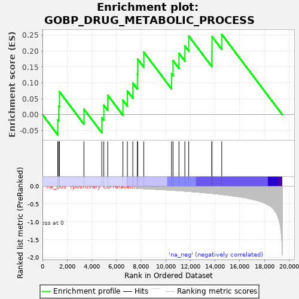
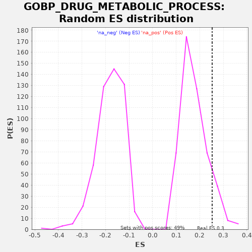

| | | Dataset | A_X_tradeoff |
| Phenotype | NoPhenotypeAvailable |
| Upregulated in class | na_pos |
| GeneSet | GOBP_DRUG_METABOLIC_PROCESS |
| Enrichment Score (ES) | 0.25252163 |
| Normalized Enrichment Score (NES) | 1.4254512 |
| Nominal p-value | 0.107942976 |
| FDR q-value | 0.8531687 |
| FWER p-Value | 1.0 |
Table: GSEA Results Summary

Fig 1: Enrichment plot: GOBP_DRUG_METABOLIC_PROCESS
Profile of the Running ES Score & Positions of GeneSet Members on the Rank Ordered List
| SYMBOL | RANK IN GENE LIST | RANK METRIC SCORE | RUNNING ES | CORE ENRICHMENT | | 1 | ABCC2 | 1237 | -0.007 | -0.0160 | Yes |
| 2 | FMO5 | 1316 | -0.007 | 0.0276 | Yes |
| 3 | NR1I2 | 1377 | -0.007 | 0.0721 | Yes |
| 4 | ABCB11 | 3364 | -0.020 | 0.0175 | Yes |
| 5 | FMO1 | 4815 | -0.032 | -0.0095 | Yes |
| 6 | FMO4 | 4978 | -0.033 | 0.0298 | Yes |
| 7 | CYP1A1 | 5295 | -0.037 | 0.0612 | Yes |
| 8 | AOX1 | 6526 | -0.052 | 0.0455 | Yes |
| 9 | CBR1 | 6889 | -0.057 | 0.0745 | Yes |
| 10 | NUDT15 | 7332 | -0.063 | 0.0993 | Yes |
| 11 | CYP2R1 | 7699 | -0.068 | 0.1281 | Yes |
| 12 | TPMT | 7722 | -0.069 | 0.1746 | Yes |
| 13 | DPEP1 | 8217 | -0.077 | 0.1968 | Yes |
| 14 | FMO2 | 10473 | -0.119 | 0.1284 | Yes |
| 15 | CYP2U1 | 10592 | -0.121 | 0.1699 | Yes |
| 16 | BCHE | 11074 | -0.134 | 0.1928 | Yes |
| 17 | ADAL | 11552 | -0.145 | 0.2159 | Yes |
| 18 | CYP2S1 | 11865 | -0.153 | 0.2474 | Yes |
| 19 | CAD | 13736 | -0.208 | 0.1988 | Yes |
| 20 | NT5C2 | 13754 | -0.209 | 0.2456 | Yes |
| 21 | VKORC1 | 14545 | -0.238 | 0.2525 | Yes |
Table: GSEA details [plain text format]

Fig 2: GOBP_DRUG_METABOLIC_PROCESS: Random ES distribution
Gene set null distribution of ES for GOBP_DRUG_METABOLIC_PROCESS